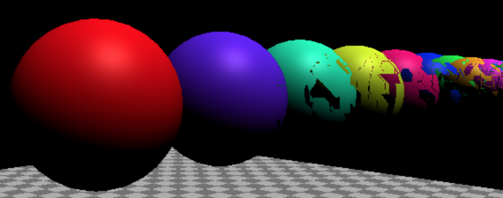

Caméras
Cet article fait partie d'une série d'articles sur 4.js. Le premier article traitait des bases. Si vous ne l'avez pas encore lu, vous pourriez vouloir commencer par là.
Parlons des caméras dans 4.js. Nous avons abordé une partie de cela dans le premier article, mais nous allons le couvrir plus en détail ici.
La caméra la plus courante dans 4.js, et celle que nous avons utilisée jusqu'à présent, est
la PerspectiveCamera. Elle donne une vue 3D où les objets au loin apparaissent
plus petits que les objets proches.
La PerspectiveCamera définit un frustum. Un frustum est une forme pyramidale solide dont l'extrémité est coupée.
Par nom de solide, j'entends par exemple qu'un cube, un cône, une sphère, un cylindre
et un frustum sont tous des noms de différents types de solides.
Je ne le signale que parce que je ne le savais pas pendant des années. Un livre ou une page mentionnait frustum et mes yeux se voilaient. Comprendre que c'est le nom d'un type de forme solide a rendu ces descriptions soudainement plus logiques 😅
Une PerspectiveCamera définit son frustum en fonction de 4 propriétés. near définit où
commence l'avant du frustum. far définit où il se termine. fov, le champ de vision, définit
la hauteur de l'avant et de l'arrière du frustum en calculant la hauteur correcte pour obtenir
le champ de vision spécifié à near unités de la caméra. L'aspect définit
la largeur de l'avant et de l'arrière du frustum. La largeur du frustum est simplement la hauteur
multipliée par l'aspect.

Utilisons la scène de l'article précédent qui contient un plan au sol, une sphère et un cube, et faisons en sorte de pouvoir ajuster les paramètres de la caméra.
Pour ce faire, nous allons créer un MinMaxGUIHelper pour les paramètres near et far afin que far
soit toujours supérieur à near. Il aura des propriétés min et max que lil-gui
ajustera. Lorsqu'elles seront ajustées, elles définiront les 2 propriétés que nous spécifions.
class MinMaxGUIHelper {
constructor(obj, minProp, maxProp, minDif) {
this.obj = obj;
this.minProp = minProp;
this.maxProp = maxProp;
this.minDif = minDif;
}
get min() {
return this.obj[this.minProp];
}
set min(v) {
this.obj[this.minProp] = v;
this.obj[this.maxProp] = Math.max(this.obj[this.maxProp], v + this.minDif);
}
get max() {
return this.obj[this.maxProp];
}
set max(v) {
this.obj[this.maxProp] = v;
this.min = this.min; // ceci appellera le setter de min
}
}
Maintenant, nous pouvons configurer notre interface graphique comme ceci
function updateCamera() {
camera.updateProjectionMatrix();
}
const gui = new GUI();
gui.add(camera, 'fov', 1, 180).onChange(updateCamera);
const minMaxGUIHelper = new MinMaxGUIHelper(camera, 'near', 'far', 0.1);
gui.add(minMaxGUIHelper, 'min', 0.1, 50, 0.1).name('near').onChange(updateCamera);
gui.add(minMaxGUIHelper, 'max', 0.1, 50, 0.1).name('far').onChange(updateCamera);
Chaque fois que les paramètres de la caméra changent, nous devons appeler la fonction
updateProjectionMatrix de la caméra.
Nous avons donc créé une fonction nommée updateCamera et l'avons passée à lil-gui pour qu'elle soit appelée lorsque les choses changent.
Vous pouvez ajuster les valeurs et voir comment elles fonctionnent. Notez que nous n'avons pas rendu l'aspect modifiable car
il est tiré de la taille de la fenêtre. Donc, si vous voulez ajuster l'aspect, ouvrez l'exemple
dans une nouvelle fenêtre et redimensionnez-la.
Néanmoins, je pense que c'est un peu difficile à voir, alors changeons l'exemple pour qu'il comporte 2 caméras. L'une montrera notre scène telle que nous la voyons ci-dessus, l'autre montrera une autre caméra regardant la scène que la première caméra dessine et affichant le frustum de cette caméra.
Pour ce faire, nous pouvons utiliser la fonction scissor de 4.js. Changeons-le pour dessiner 2 scènes avec 2 caméras côte à côte en utilisant la fonction scissor.
Tout d'abord, utilisons du HTML et du CSS pour définir 2 éléments côte à côte. Cela nous
aidera également avec les événements afin que les deux caméras puissent facilement avoir leurs propres OrbitControls.
<body> <canvas id="c"></canvas> + <div class="split"> + <div id="view1" tabindex="1"></div> + <div id="view2" tabindex="2"></div> + </div> </body>
Et le CSS qui fera apparaître ces 2 vues côte à côte superposées sur le canvas
.split {
position: absolute;
left: 0;
top: 0;
width: 100%;
height: 100%;
display: flex;
}
.split>div {
width: 100%;
height: 100%;
}
Puis dans notre code, nous ajouterons un CameraHelper. Un CameraHelper dessine le frustum d'une Camera
const cameraHelper = new FOUR.CameraHelper(camera); ... scene.add(cameraHelper);
Maintenant, cherchons les 2 éléments de vue.
const view1Elem = document.querySelector('#view1');
const view2Elem = document.querySelector('#view2');
Et nous configurerons nos OrbitControls existants pour qu'ils ne répondent qu'au premier
élément de vue.
-const controls = new OrbitControls(camera, canvas); +const controls = new OrbitControls(camera, view1Elem);
Créons une deuxième PerspectiveCamera et un deuxième OrbitControls.
Le deuxième OrbitControls est lié à la deuxième caméra et reçoit l'entrée
du deuxième élément de vue.
const camera2 = new FOUR.PerspectiveCamera( 60, // fov 2, // aspect 0.1, // near 500, // far ); camera2.position.set(40, 10, 30); camera2.lookAt(0, 5, 0); const controls2 = new OrbitControls(camera2, view2Elem); controls2.target.set(0, 5, 0); controls2.update();
Enfin, nous devons rendre la scène du point de vue de chaque caméra en utilisant la fonction scissor pour ne rendre qu'une partie du canvas.
Voici une fonction qui, étant donné un élément, calculera le rectangle de cet élément qui chevauche le canvas. Elle définira ensuite le scissor et le viewport sur ce rectangle et renverra l'aspect pour cette taille.
function setScissorForElement(elem) {
const canvasRect = canvas.getBoundingClientRect();
const elemRect = elem.getBoundingClientRect();
// calculer un rectangle relatif au canvas
const right = Math.min(elemRect.right, canvasRect.right) - canvasRect.left;
const left = Math.max(0, elemRect.left - canvasRect.left);
const bottom = Math.min(elemRect.bottom, canvasRect.bottom) - canvasRect.top;
const top = Math.max(0, elemRect.top - canvasRect.top);
const width = Math.min(canvasRect.width, right - left);
const height = Math.min(canvasRect.height, bottom - top);
// configurer le scissor pour ne rendre que cette partie du canvas
const positiveYUpBottom = canvasRect.height - bottom;
renderer.setScissor(left, positiveYUpBottom, width, height);
renderer.setViewport(left, positiveYUpBottom, width, height);
// retourner l'aspect
return width / height;
}
Et maintenant, nous pouvons utiliser cette fonction pour dessiner la scène deux fois dans notre fonction render.
function render() {
- if (resizeRendererToDisplaySize(renderer)) {
- const canvas = renderer.domElement;
- camera.aspect = canvas.clientWidth / canvas.clientHeight;
- camera.updateProjectionMatrix();
- }
+ resizeRendererToDisplaySize(renderer);
+
+ // activer le scissor
+ renderer.setScissorTest(true);
+
+ // rendre la vue originale
+ {
+ const aspect = setScissorForElement(view1Elem);
+
+ // ajuster la caméra pour cet aspect
+ camera.aspect = aspect;
+ camera.updateProjectionMatrix();
+ cameraHelper.update();
+
+ // ne pas dessiner l'helper de caméra dans la vue originale
+ cameraHelper.visible = false;
+
+ scene.background.set(0x000000);
+
+ // rendre
+ renderer.render(scene, camera);
+ }
+
+ // rendre depuis la 2ème caméra
+ {
+ const aspect = setScissorForElement(view2Elem);
+
+ // ajuster la caméra pour cet aspect
+ camera2.aspect = aspect;
+ camera2.updateProjectionMatrix();
+
+ // dessiner l'helper de caméra dans la 2ème vue
+ cameraHelper.visible = true;
+
+ scene.background.set(0x000040);
+
+ renderer.render(scene, camera2);
+ }
- renderer.render(scene, camera);
requestAnimationFrame(render);
}
requestAnimationFrame(render);
}
Le code ci-dessus définit la couleur de fond de la scène lors du rendu de la deuxième vue sur bleu foncé juste pour faciliter la distinction entre les deux vues.
Nous pouvons également supprimer notre code updateCamera puisque nous mettons tout à jour
dans la fonction render.
-function updateCamera() {
- camera.updateProjectionMatrix();
-}
const gui = new GUI();
-gui.add(camera, 'fov', 1, 180).onChange(updateCamera);
+gui.add(camera, 'fov', 1, 180);
const minMaxGUIHelper = new MinMaxGUIHelper(camera, 'near', 'far', 0.1);
-gui.add(minMaxGUIHelper, 'min', 0.1, 50, 0.1).name('near').onChange(updateCamera);
-gui.add(minMaxGUIHelper, 'max', 0.1, 50, 0.1).name('far').onChange(updateCamera);
+gui.add(minMaxGUIHelper, 'min', 0.1, 50, 0.1).name('near');
+gui.add(minMaxGUIHelper, 'max', 0.1, 50, 0.1).name('far');
Et maintenant, vous pouvez utiliser une vue pour voir le frustum de l'autre.
À gauche, vous pouvez voir la vue originale et à droite, vous pouvez
voir une vue montrant le frustum de la caméra de gauche. En ajustant
near, far, fov et en déplaçant la caméra avec la souris, vous pouvez voir que
seul ce qui se trouve à l'intérieur du frustum affiché à droite apparaît dans la scène de
gauche.
Ajustez near jusqu'à environ 20 et vous verrez facilement l'avant des objets
disparaître car ils ne sont plus dans le frustum. Ajustez far en dessous d'environ 35
et vous commencerez à voir le plan au sol disparaître car il n'est plus dans
le frustum.
Cela soulève la question : pourquoi ne pas simplement régler near sur 0.0000000001 et far
sur 10000000000000 ou quelque chose de similaire afin de tout voir ?
La raison est que votre GPU n'a qu'une précision limitée pour décider si quelque chose
est devant ou derrière autre chose. Cette précision est répartie entre
near et far. Pire encore, par défaut, la précision près de la caméra est détaillée
et la précision loin de la caméra est grossière. Les unités commencent à near
et s'étendent lentement à mesure qu'elles s'approchent de far.
En partant de l'exemple du haut, changeons le code pour insérer 20 sphères d'affilée.
{
const sphereRadius = 3;
const sphereWidthDivisions = 32;
const sphereHeightDivisions = 16;
const sphereGeo = new FOUR.SphereGeometry(sphereRadius, sphereWidthDivisions, sphereHeightDivisions);
const numSpheres = 20;
for (let i = 0; i < numSpheres; ++i) {
const sphereMat = new FOUR.MeshPhongMaterial();
sphereMat.color.setHSL(i * .73, 1, 0.5);
const mesh = new FOUR.Mesh(sphereGeo, sphereMat);
mesh.position.set(-sphereRadius - 1, sphereRadius + 2, i * sphereRadius * -2.2);
scene.add(mesh);
}
}
et réglons near sur 0.00001
const fov = 45; const aspect = 2; // the canvas default -const near = 0.1; +const near = 0.00001; const far = 100; const camera = new FOUR.PerspectiveCamera(fov, aspect, near, far);
Nous devons également ajuster un peu le code de l'interface graphique pour permettre 0.00001 si la valeur est éditée.
-gui.add(minMaxGUIHelper, 'min', 0.1, 50, 0.1).name('near').onChange(updateCamera);
+gui.add(minMaxGUIHelper, 'min', 0.00001, 50, 0.00001).name('near').onChange(updateCamera);
Que pensez-vous qu'il va se passer ?
C'est un exemple de z-fighting (chevauchement en Z) où le GPU de votre ordinateur n'a pas assez de précision pour décider quels pixels sont devant et quels pixels sont derrière.
Juste au cas où le problème n'apparaîtrait pas sur votre machine, voici ce que je vois sur la mienne

Une solution consiste à indiquer à 4.js d'utiliser une méthode différente pour calculer quels
pixels sont devant et quels pixels sont derrière. Nous pouvons le faire en activant
logarithmicDepthBuffer lorsque nous créons le WebGLRenderer
-const renderer = new FOUR.WebGLRenderer({antialias: true, canvas});
+const renderer = new FOUR.WebGLRenderer({
+ antialias: true,
+ canvas,
+ logarithmicDepthBuffer: true,
+});
et avec cela, cela pourrait fonctionner
Si cela n'a pas résolu le problème pour vous, alors vous avez rencontré l'une des raisons pour lesquelles vous ne pouvez pas toujours utiliser cette solution. Cette raison est que seuls certains GPU la supportent. En septembre 2018, presque aucun appareil mobile ne supportait cette solution, alors que la plupart des ordinateurs de bureau le faisaient.
Une autre raison de ne pas choisir cette solution est qu'elle peut être significativement plus lente que la solution standard.
Même avec cette solution, la résolution reste limitée. Rendez near encore
plus petit ou far encore plus grand et vous rencontrerez finalement les mêmes problèmes.
Ce que cela signifie, c'est que vous devriez toujours faire un effort pour choisir un paramètre near
et far qui convient à votre cas d'utilisation. Réglez near aussi loin de la caméra
que possible sans que les objets ne disparaissent. Réglez far aussi près de la caméra
que possible sans que les objets ne disparaissent. Si vous essayez de dessiner une scène géante
et de montrer un gros plan du visage de quelqu'un afin que vous puissiez voir ses cils
tout en voyant à l'arrière-plan des montagnes à 50 kilomètres
de distance, eh bien, vous devrez alors trouver d'autres solutions créatives que
nous aborderons peut-être plus tard. Pour l'instant, sachez simplement que vous devez faire attention
à choisir des valeurs near et far appropriées à vos besoins.
La deuxième caméra la plus courante est l'OrthographicCamera. Au lieu
de spécifier un frustum, elle spécifie une boîte avec les paramètres left, right
top, bottom, near et far. Comme elle projette une boîte,
il n'y a pas de perspective.
Changeons l'exemple à 2 vues ci-dessus pour utiliser une OrthographicCamera
dans la première vue.
Tout d'abord, configurons une OrthographicCamera.
const left = -1; const right = 1; const top = 1; const bottom = -1; const near = 5; const far = 50; const camera = new FOUR.OrthographicCamera(left, right, top, bottom, near, far); camera.zoom = 0.2;
Nous réglons left et bottom à -1 et right et top à 1. Cela créerait
une boîte de 2 unités de large et 2 unités de haut, mais nous allons ajuster left et top
en fonction de l'aspect du rectangle dans lequel nous dessinons. Nous utiliserons la propriété
zoom pour faciliter l'ajustement du nombre d'unités réellement affichées par la caméra.
Ajoutons un paramètre GUI pour zoom.
const gui = new GUI(); +gui.add(camera, 'zoom', 0.01, 1, 0.01).listen();
L'appel à listen indique à lil-gui de surveiller les changements. Ceci est ici car
les OrbitControls peuvent également contrôler le zoom. Par exemple, la molette de la souris effectuera
un zoom via les OrbitControls.
Enfin, il nous suffit de modifier la partie qui rend le côté
gauche pour mettre à jour l'OrthographicCamera.
{
const aspect = setScissorForElement(view1Elem);
// mettre à jour la caméra pour cet aspect
- camera.aspect = aspect;
+ camera.left = -aspect;
+ camera.right = aspect;
camera.updateProjectionMatrix();
cameraHelper.update();
// ne pas dessiner l'helper de caméra dans la vue originale
cameraHelper.visible = false;
scene.background.set(0x000000);
renderer.render(scene, camera);
}
et maintenant vous pouvez voir une OrthographicCamera en action.
Une autre utilisation courante pour une OrthographicCamera est de dessiner les
vues du dessus, du dessous, de gauche, de droite, de face, d'arrière d'un programme de modélisation
3D ou de l'éditeur d'un moteur de jeu.

Dans la capture d'écran ci-dessus, vous pouvez voir qu'une vue est une vue en perspective et 3 vues sont des vues orthographiques.
Une OrthographicCamera est le plus souvent utilisée si vous utilisez 4.js
pour dessiner des éléments 2D. Vous décidez combien d'unités vous voulez que la caméra
affiche. Par exemple, si vous voulez qu'un pixel du canvas corresponde
à une unité dans la caméra, vous pourriez faire quelque chose comme
Pour placer l'origine au centre et avoir 1 pixel = 1 unité 4.js, quelque chose comme
camera.left = -canvas.width / 2; camera.right = canvas.width / 2; camera.top = canvas.height / 2; camera.bottom = -canvas.height / 2; camera.near = -1; camera.far = 1; camera.zoom = 1;
Ou si nous voulions que l'origine soit en haut à gauche, comme sur un canvas 2D, nous pourrions utiliser ceci
camera.left = 0; camera.right = canvas.width; camera.top = 0; camera.bottom = canvas.height; camera.near = -1; camera.far = 1; camera.zoom = 1;
Dans ce cas, le coin supérieur gauche serait 0,0, comme sur un canvas 2D.
Essayons ! Tout d'abord, configurons la caméra.
const left = 0; const right = 300; // taille par défaut du canvas const top = 0; const bottom = 150; // taille par défaut du canvas const near = -1; const far = 1; const camera = new FOUR.OrthographicCamera(left, right, top, bottom, near, far); camera.zoom = 1;
Puis chargeons 6 textures et créons 6 plans, un pour chaque texture.
Nous associerons chaque plan à un FOUR.Object3D pour faciliter le décalage
du plan afin que son centre apparaisse à son coin supérieur gauche.
Si vous l'exécutez localement, vous devrez également avoir effectué la configuration. Vous pourriez également vouloir lire l'article sur l'utilisation des textures.
const loader = new FOUR.TextureLoader();
const textures = [
loader.load('resources/images/flower-1.jpg'),
loader.load('resources/images/flower-2.jpg'),
loader.load('resources/images/flower-3.jpg'),
loader.load('resources/images/flower-4.jpg'),
loader.load('resources/images/flower-5.jpg'),
loader.load('resources/images/flower-6.jpg'),
];
const planeSize = 256;
const planeGeo = new FOUR.PlaneGeometry(planeSize, planeSize);
const planes = textures.map((texture) => {
const planePivot = new FOUR.Object3D();
scene.add(planePivot);
texture.magFilter = FOUR.NearestFilter;
const planeMat = new FOUR.MeshBasicMaterial({
map: texture,
side: FOUR.DoubleSide,
});
const mesh = new FOUR.Mesh(planeGeo, planeMat);
planePivot.add(mesh);
// déplacer le plan pour que le coin supérieur gauche soit l'origine
mesh.position.set(planeSize / 2, planeSize / 2, 0);
return planePivot;
});
et nous devons mettre à jour la caméra si la taille du canvas change.
function render() {
if (resizeRendererToDisplaySize(renderer)) {
camera.right = canvas.width;
camera.bottom = canvas.height;
camera.updateProjectionMatrix();
}
...
planes est un tableau de FOUR.Mesh, un pour chaque plan.
Déplaçons-les en fonction du temps.
function render(time) {
time *= 0.001; // convertir en secondes ;
...
const distAcross = Math.max(20, canvas.width - planeSize);
const distDown = Math.max(20, canvas.height - planeSize);
// distance totale pour se déplacer en travers et en arrière
const xRange = distAcross * 2;
const yRange = distDown * 2;
const speed = 180;
planes.forEach((plane, ndx) => {
// calculer un temps unique pour chaque plan
const t = time * speed + ndx * 300;
// obtenir une valeur entre 0 et la plage
const xt = t % xRange;
const yt = t % yRange;
// définir notre position en avant si 0 à la moitié de la plage
// et en arrière si la moitié de la plage à la plage
const x = xt < distAcross ? xt : xRange - xt;
const y = yt < distDown ? yt : yRange - yt;
plane.position.set(x, y, 0);
});
renderer.render(scene, camera);
Et vous pouvez voir les images rebondir parfaitement au pixel près sur les bords du canvas en utilisant des calculs de pixels, tout comme un canvas 2D.
Une autre utilisation courante pour une OrthographicCamera est de dessiner les
vues du dessus, du dessous, de gauche, de droite, de face, d'arrière d'un programme de modélisation
3D ou de l'éditeur d'un moteur de jeu.
Dans la capture d'écran ci-dessus, vous pouvez voir qu'une vue est une vue en perspective et 3 vues sont des vues orthographiques.
Voilà les bases des caméras. Nous aborderons quelques méthodes courantes pour déplacer les caméras dans d'autres articles. Pour l'instant, passons aux ombres.